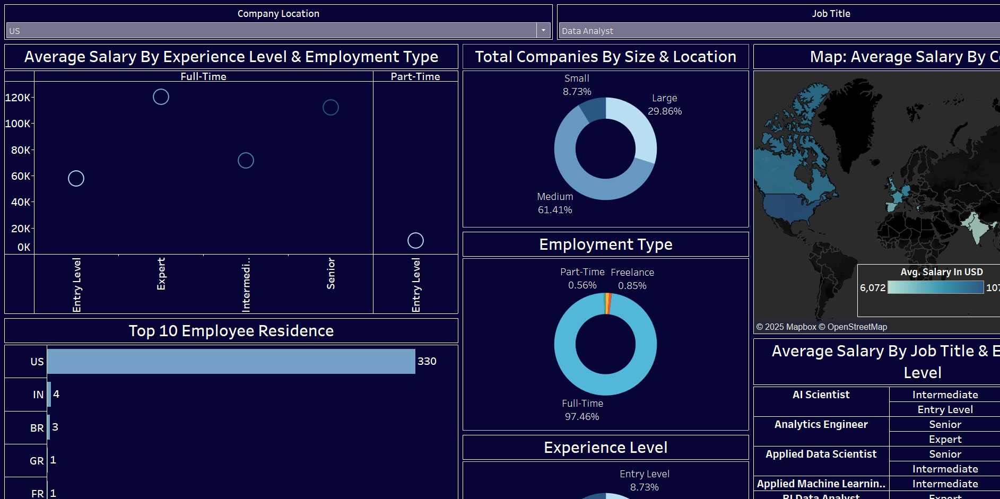

NYC Layoffs Dashboard (Tableau)
This project analyzes employment layoff data to identify trends and insights across companies, industries, job roles, and layoff timelines.
The goal was to examine the impact of layoffs in NYC and uncover patterns in affected areas.

Data Science Salary Project (Tableau)
I worked on a Tableau project that analyzed salary data to uncover trends within the data science industry. This project benefited my career path and gave me valuable insights into how factors like experience level, role, region, remote work, and company size impact compensation.
Through this project, I created an interactive dashboard highlighting these trends, making it easy to identify how salaries differ across various scenarios.
This experience helped sharpen my skills in building dynamic visualizations and uncovering actionable insights. It also gave me a deeper understanding of data science compensation standards, which has been helpful for my career planning and growth.